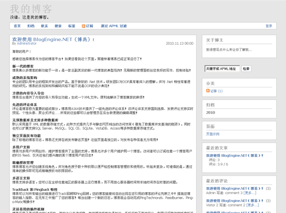

BlogEngine.NET（博易） 是一款免费、开源的博客系统。2008年至今，本博基于 BlogEngine.NET 进行中文本地化，并将其努力在中国进行推广和应用。

博易遵循 W3C 标准，具有极强的可扩展性、高性能、良好的 SEO 性能和非凡的用户体验。不仅如此，博易还拥有一批高质量的用户群，他们的支持使博易得以不断地发展。 博易不仅开源，而且免费。所有的技术支持全部都是无偿提供的！博易的安装和使用异常简单，打造个性化博客也将成为可能，还等什么？
博易上手之快捷三部曲
获取优秀的虚拟主机 让您在拥有高质量服务器保证的同时享受博易官方的技术支持。
Step1. 下载适合你主机的版本。
Step2. 将下载的文件解压后上传到您的主机（或者上传至您的主机再解压），即可直接通过你的主机域名登录。同时也支持离线写作（了解详情）。
Step3. 主题模板 / 插件 / 小部件 / 文档教程 为您使用博易、打造个性化博客以及扩展开发提供全面的支持。
使用典范 Supidea
标签 配置, 数据库, 邮件, 补丁, 模板, 插件, 小部件, 升级, v1.0, v1.5, v1.6, v1.6.5, v1.7, v1.7.5, v1.8, v1.8.5, v1.9, v2.0, v2.5